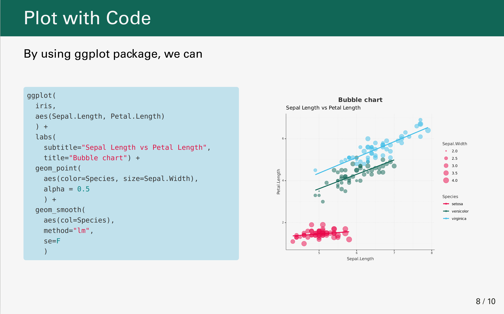

HTML Presentation By RemarklJS
Source:vignettes/articles/08_remarkJS_presentation.Rmd
08_remarkJS_presentation.Rmdremrak.js is a simple Markdown-driven presentation tool that runs in the browser. You can create amazing presentations to fit your tastes if you have a basic understanding of HTML and CSS. For create slides, we use xaringan package, that has brought remark.js to RMarkdown. You can see Yihui demo. There are many introductions to Xaringan like this.
moon_reader is the main function that takes many options to generate HTML slides. To achieve the MPI theme, add custom CSS and other settings. In the below YAML, you can find theme configurations.
---
title: Statistical Analysis of Behavioral Data
subtitle: Data Driven Approach
date: "13 October, 2021"
author: Ahmad Ehyaei
institute: Max-Planck Institute
output:
xaringan::moon_reader:
lib_dir: libs
css: [src/styles/template.css, src/styles/environments.css]
nature:
highlightStyle: github
highlightLines: true
ratio: "16:10"
slideNumberFormat: "%current% / %total%"
navigation:
scroll: false
---

|

|
|
|  |

|
There is no configuration settings than template.css inside the path src/styles in the template. In the template.css, colors, and figures can be set on top of the code.